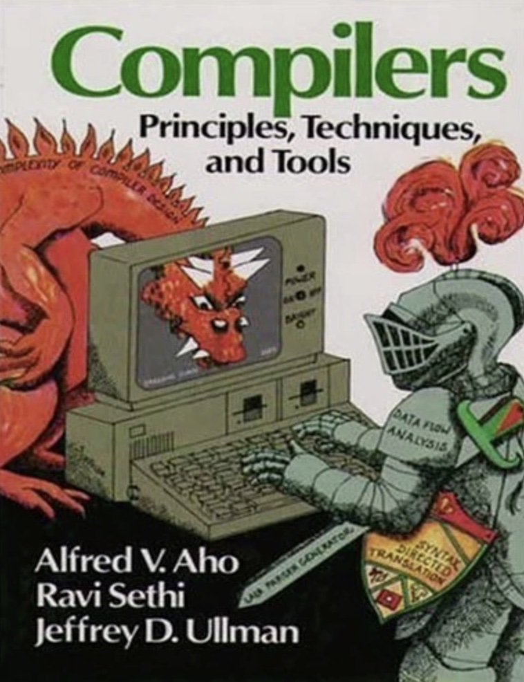
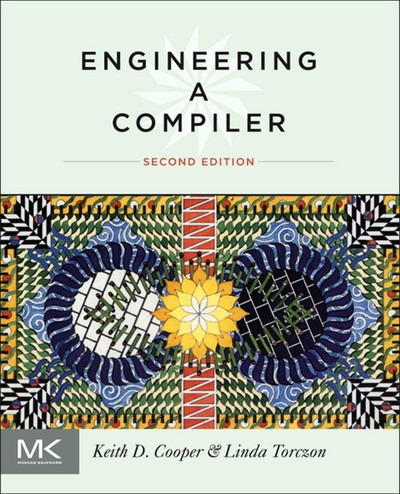
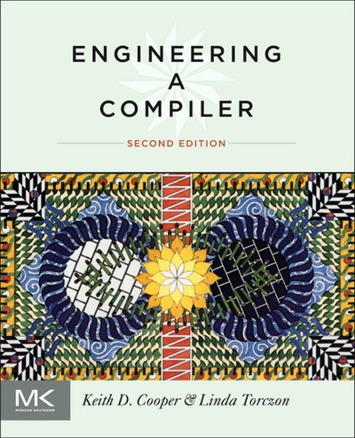

Dec 6, 2025
BCFS: Building Compiler From Scratch, The Beginning
It’s December! I should go buy a Christmas tree 🎄! Although the weather has gotten really cold, it feels like I’m slowly getting used to it.
Hong-Sheng Zheng, Dec 6, 2025
I’ve long wanted to write a series on building a compiler from scratch. Well, this post marks the beginning of that journey. While I cannot promise a rapid release schedule. I intend to explore topics in depth and expand the scope of this series as much as possible. Well, it’s going to be a challenge, but let’s give it a shot.
This series will feature complete C++ code implementations without relying on existing compiler frameworks like LLVM.
While frameworks are powerful, and most engineers typically wouldn’t reinvent the wheel in practice,
using them often abstracts away the low-level details that provide the most valuable learning opportunities.
The goal of this series is to build a lightweight yet fully functional compiler.
Although we’re not using LLVM, we’ll still reference its implementation.
For convenience, future posts in this series will be prefixed with BCFS (Building Compiler From Scratch).
Story
My own journey into compiler began in university when I’m a undergraduated student.
Back then, while studying, I came across quite a few books, but my favorite compiler book wasn’t one
of those everyone talks about like the Dragon Book, the one with the cover showing a knight sitting
at a computer facing a dragon (later revised to they wielding a sword battling the dragon),
or the Whale Book for compiler optimization, or Engineering a Compiler.
By the way, Engineering a Compiler is also an excellent book,
and its cover features the decorative design of the ceiling in Rice University’s Duncan Hall auditorium.

 

Instead, my favorite compiler book is A Retargetable C Compiler: Design and Implementation.
The reason is that it was the first one I could actually follow along with, step by step, line by line,
to understand the design of all the various components a compiler needs.
What initially surprised me the most back then was how it designed a symbol table
to handle lexical scope. That’s when I finally understood why dynamic scope, which had always felt
the most counterintuitive to me, was actually the easiest to implement.
This series reflects that philosophy. We’ll build a compiler step by step, learning both theory and
practice along the way. But something different is that we will adopt the method described in
An Incremental Approach to Compiler Construction written by Abdulaziz Ghuloum,
who advocates learning compilers from the bottom up, starting from assembly
or even the system’s object/executable file formats, and working our way up to the source language.
So, Yes! we’ll start with ELF, the object file format for Linux and manually construct our first executable.
And we will target the ARM64 architecture. If you are on a non-ARM64 Linux environment, you can use qemu-aarch64.
If you are on macOS (Apple Silicon), you can try the lima,
which provide you an easier way to access Linux.
Overview
To give readers a heads-up on what language we will be compiling, here’s a quick overview:
this series will not cover parsing. Therefore, for the source language, we’ll use Scheme, a dialect of Lisp.
Scheme’s syntax is much simpler than that of other languages,
as its S-Expressions directly represent the initial Abstract Syntax Tree (AST).
So it has a vastly simplifying implementation compared to languages requiring complex parsers.
However, We will not be strictly adhering to any specific Scheme standard. Instead,
the language will be kept as simple as possible, designed primarily to fit our needs,
while still retaining the essence of Scheme’s design. And to ensure type determinism,
we will adopt the design principles of Typed Scheme. You can refer to this documentation for more details:
Typed Scheme: Scheme with Static Types.
Here is a simple recursive Fibonacci function to demonstrate what the language will look like.
(: fib (i64 -> i64))
(define fib (lambda (n)
(if (< n 2)
n
(+ (fib (- n 1)) (fib (- n 2))))))And here is a visualization of what the AST for the fib function.
What’s Next
In the next post, we’ll dive into the ELF format and learn how to manually construct an ELF executable from scratch. We’ll build a minimal executable that runs on AArch64 hardware, understanding every piece of the binary structure along the way. A minimal ELF generator will be developed in the next post as well, which will serve as the interface for our compiler to generate AArch64 instructions and produce executable binaries with the Linker.